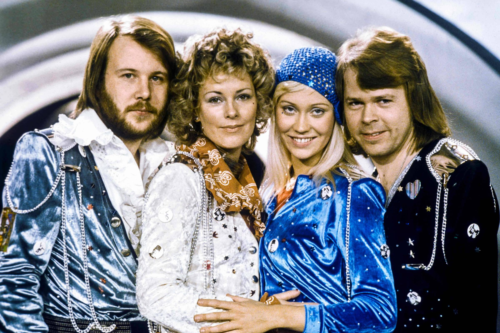

A Revolução Musical
Por: Maria Clara Siqueira Ferreira
Bem vindos ao meu fanpage! Aqui você pode conhecer melhor a história deste maravilhoso grupo que revolucionou os anos 70.
Vou contar a história do inicio e fim do grupo ABBA

Por: Maria Clara Siqueira Ferreira
Bem vindos ao meu fanpage! Aqui você pode conhecer melhor a história deste maravilhoso grupo que revolucionou os anos 70.